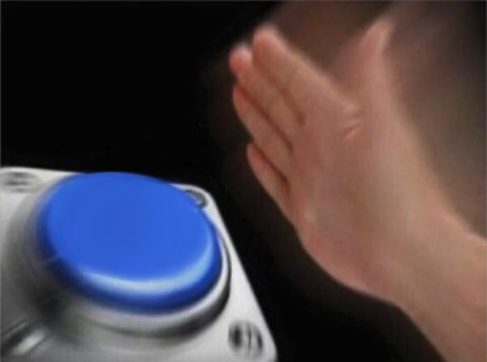
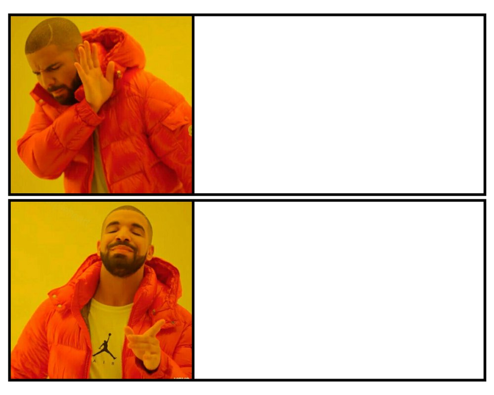

Meme templates are a very integral part of the memes themselves. Almost every meme today uses a template. They can be easily edited by anyone to make new memes. These templates will usually become out of date or "stale". However there are a few exceptions that are continuously being reused. This popular template on the right is known as the "nut button". It is the same one being used on the homepage of this website. Anytime that you want to show that someone would do something without hesitation you would use this format.
The other template to the right is of drake dancing in his popular song "Hotline Bling". It is used to show something that you don't/won't do vs something that you will do. Or something you don't like then something you like. This is a very popular template and hasn't died out or become stale over the years. It will pop up occasionally every couple of weeks with a new subject.
 